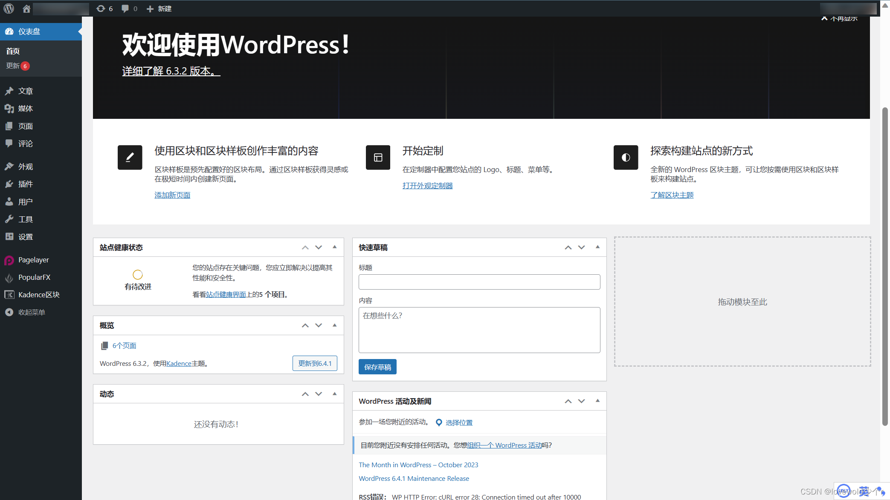
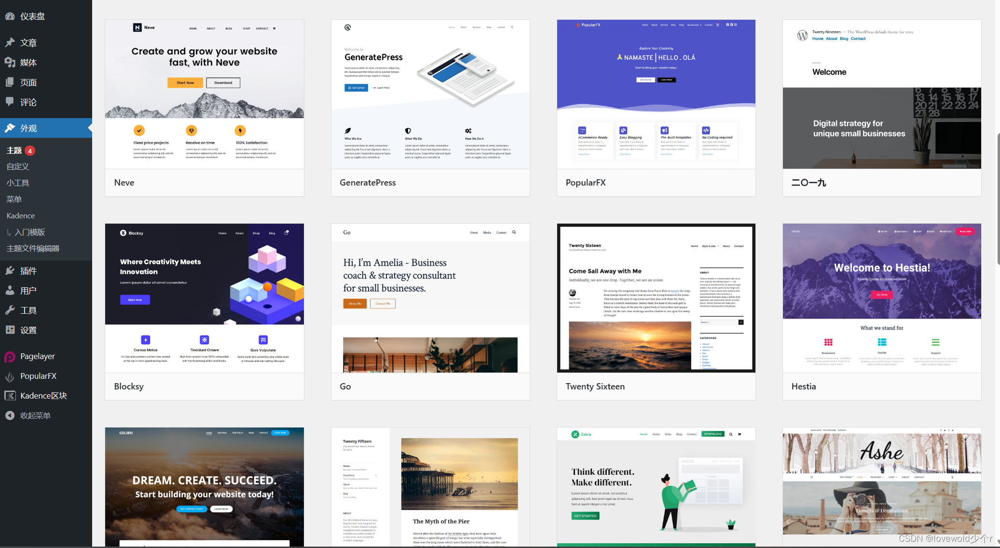

Wordpress
 项目首页
项目首页
WordPress是使用PHP语言开发的博客平台，用户可以在支持PHP和Mysql数据库的服务器上架设属于自己的网站。也可以把 WordPress当作一个内容管理系统（CMS）来使用。


 如何部署在线 Wordpress
如何部署在线 Wordpress
什么是 Wordpress
- WordPress是一款免费的、开源的建站平台。从技术的角度，WordPress是基于PHP程序和MySQL数据库的一款内容管理系统CMS（Content Management System）。它是一个用PHP编写的软件，支持MySQL数据库。WordPress最初是一个用于博客的平台，但随着时间的推移，它发展成一个功能强大且灵活的CMS，适用于各种类型的网站。
功能列表
-
操作简单：利用WordPress，你可以快速地发布和构建网站内容，即便是新手，也能很快掌握。
-
免费：WordPress是一个免费平台，你无需为此支付任何费用。
-
灵活性：WordPress可用于创建各个类型的网站，从个人博客到在线商店均可。
-
易用：使用WordPress CMS来管理网站内容非常简单，通常只需要会打字即可，类似于编辑Word文件。
-
开源：WordPress是根据GNU通用公共许可证（GPL）授权的开源软件，不属于任何单位或者个人。所有人均可以自行对它进行二次开发、改进成自己需要的程序。
-
无需代码：不会代码也能利用WordPress做出网站来；但，如果想要自行开发改进，就需要代码基础了。
-
插件：WordPress网站可通过插件来实现更多的功能，WordPress.org上提供了很多免费的插件。
-
主题：通过安装主题，可以高度自定义你的WordPress网站，主题有免费的，也有收费的。
-
安全性：没有任何程序可以说是100%安全的，但WordPress更新了这么多代，其稳定性和安全性是不用质疑的，远比其他网站程序成熟。